PerkLaps
- Date
- 2007 – 2010
- Venue
- Conservatory of Music – Universidad Nacional de Colombia
- Role
- Laptop performer (electronics)
- Technologies
- Pure Data
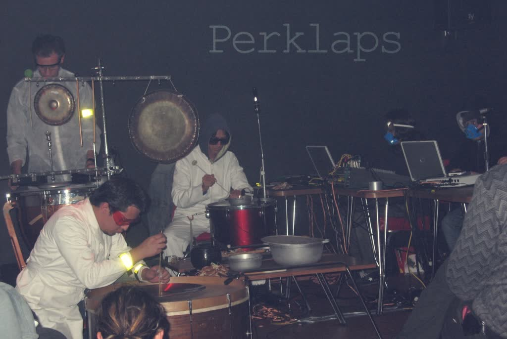
The percussion and electronics ensemble PerkLaps was founded in 2007 as a contemporary music performance and research group at the Conservatory of Music of the Universidad Nacional de Colombia. It was initially made up of three symphonic percussionists (students Shamir Camejo and Julio Pulido, and maestro Federico Demmer) and three laptop performers (Andrés Ñañez, Mario Salazar and Ricardo Dueñas).
The ensemble performed at electronic music venues such as the independent cultural space matik-matik and the Maloka interactive center; at chamber music recitals such as the special concert series at the Olav Roots auditorium and the Otto de Greiff hall of the Bogotá Philharmonic Orchestra; and at contemporary music events such as the Fifth Colombian-Catalan Week. It also recorded Roberto García's Masacote for the album 5:09 by the Faculty of Arts of the Universidad Nacional de Colombia.
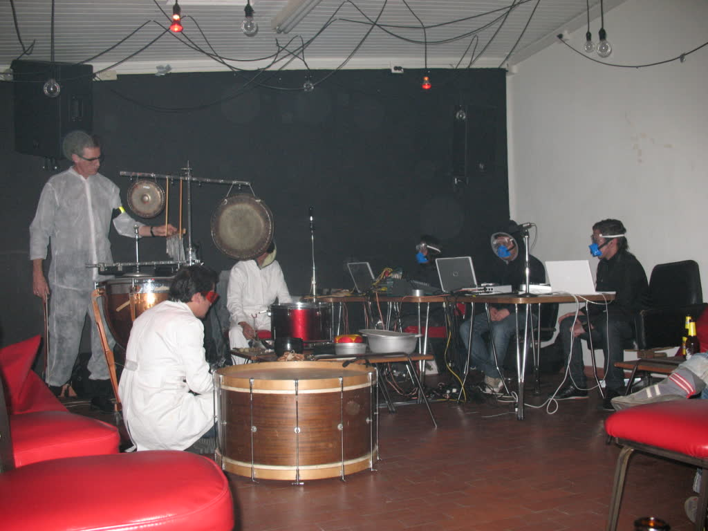
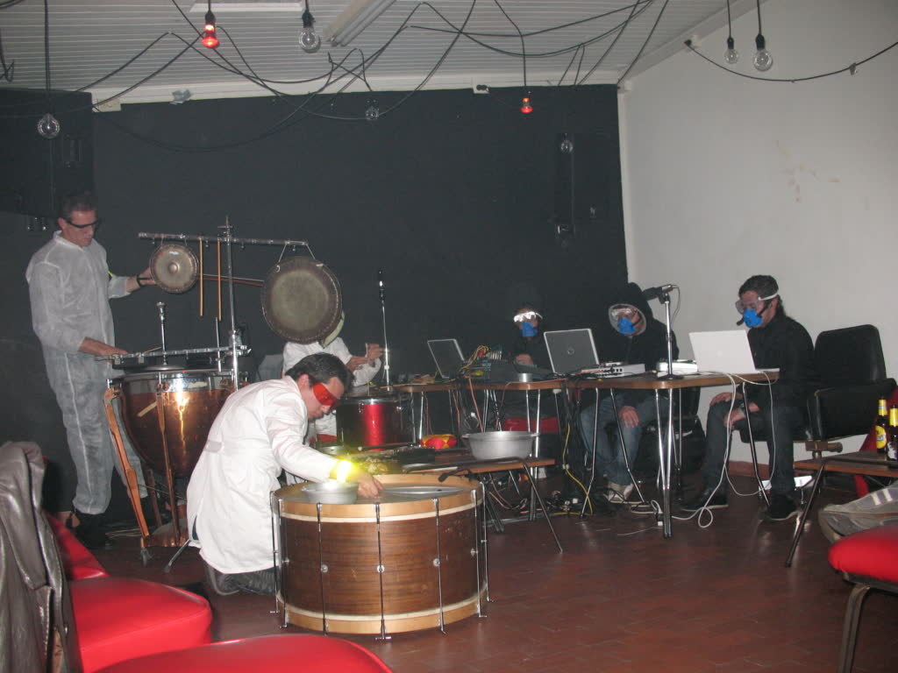
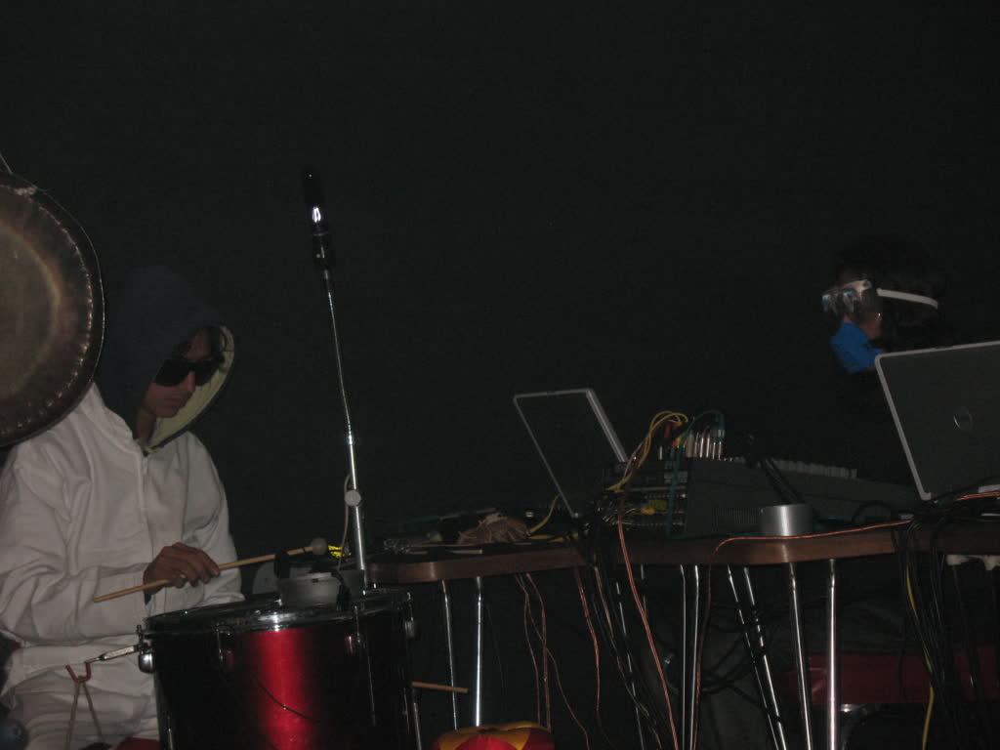
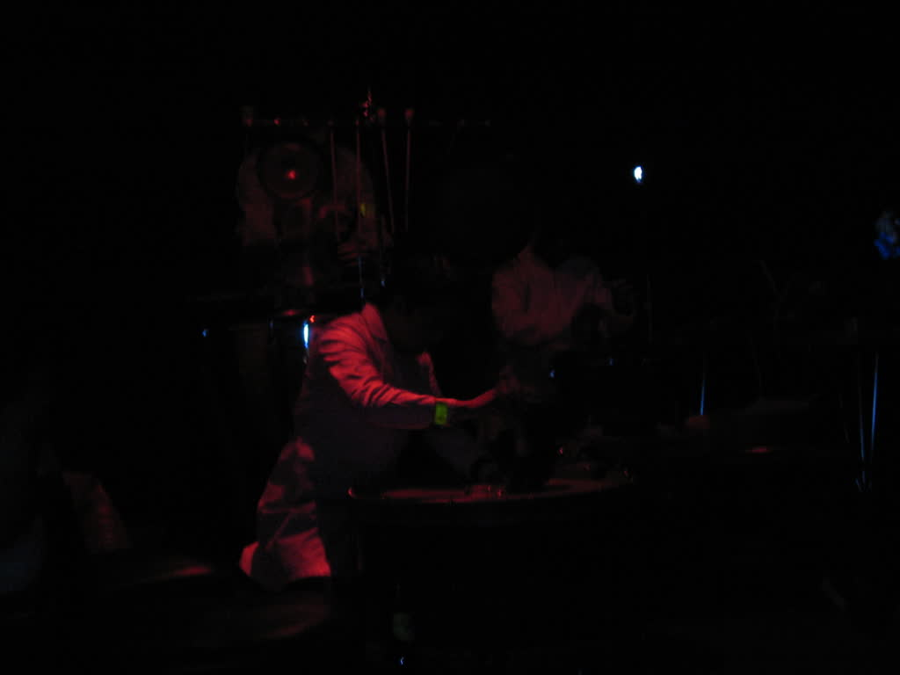
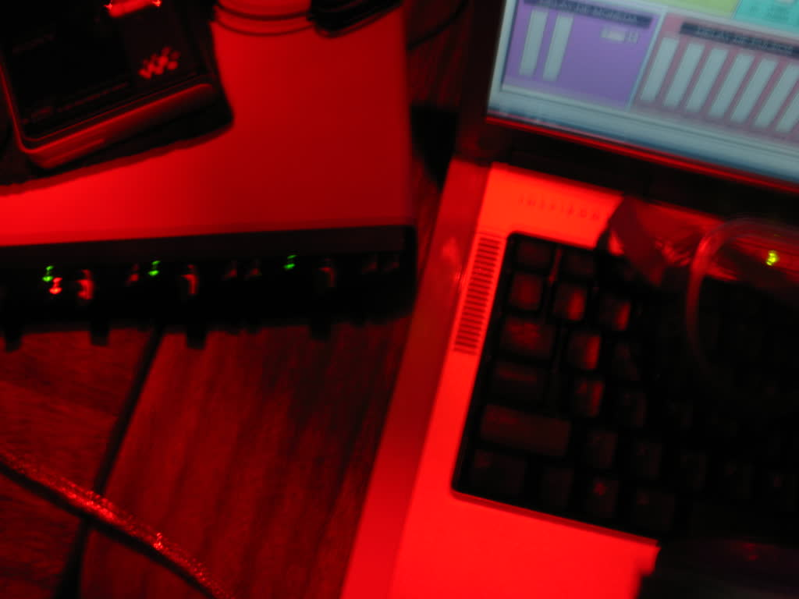
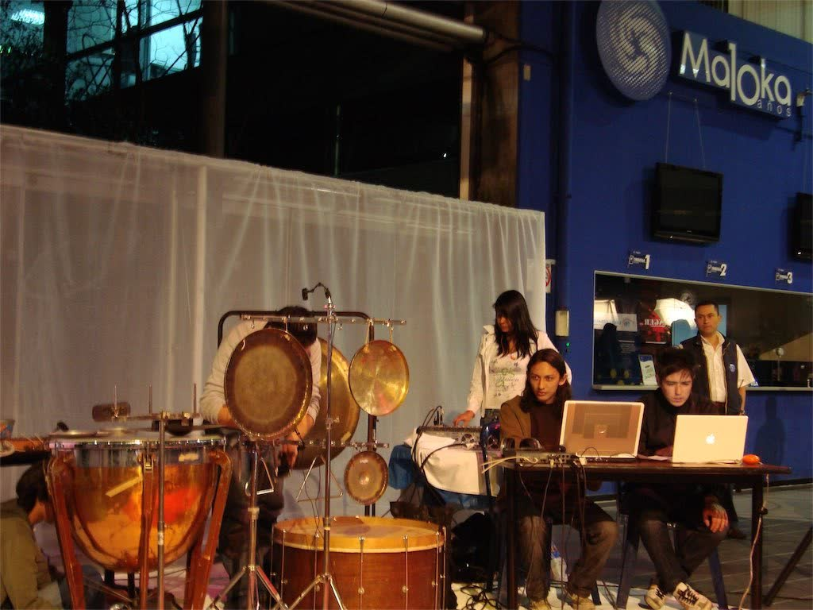
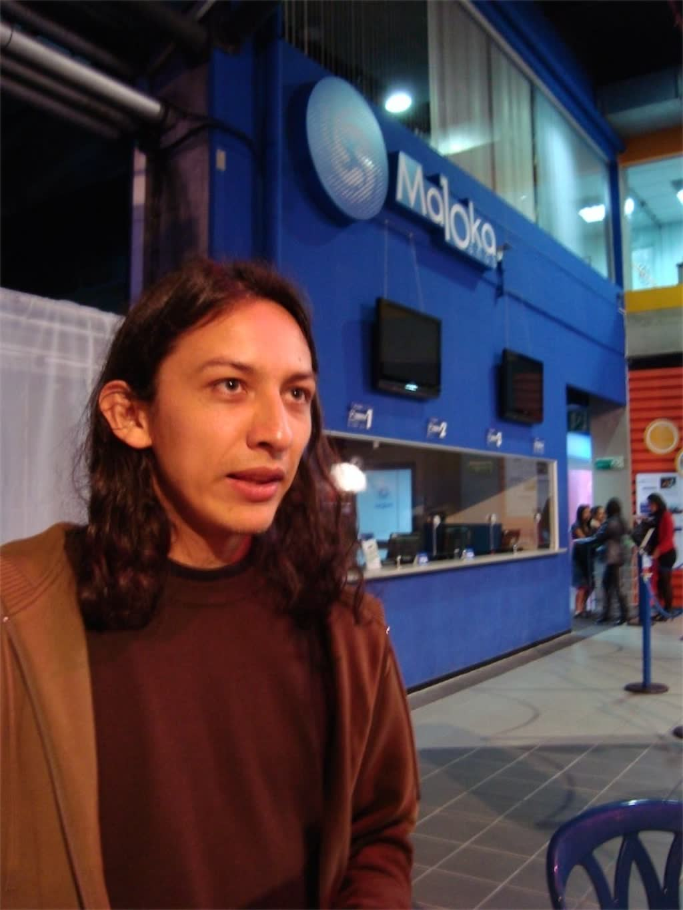
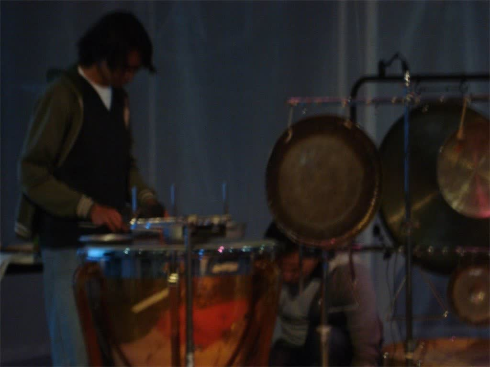
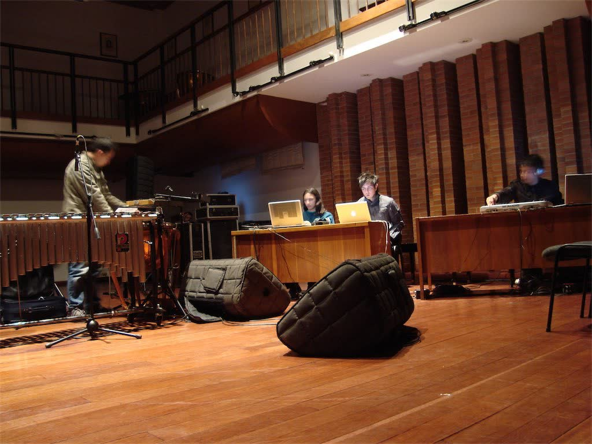
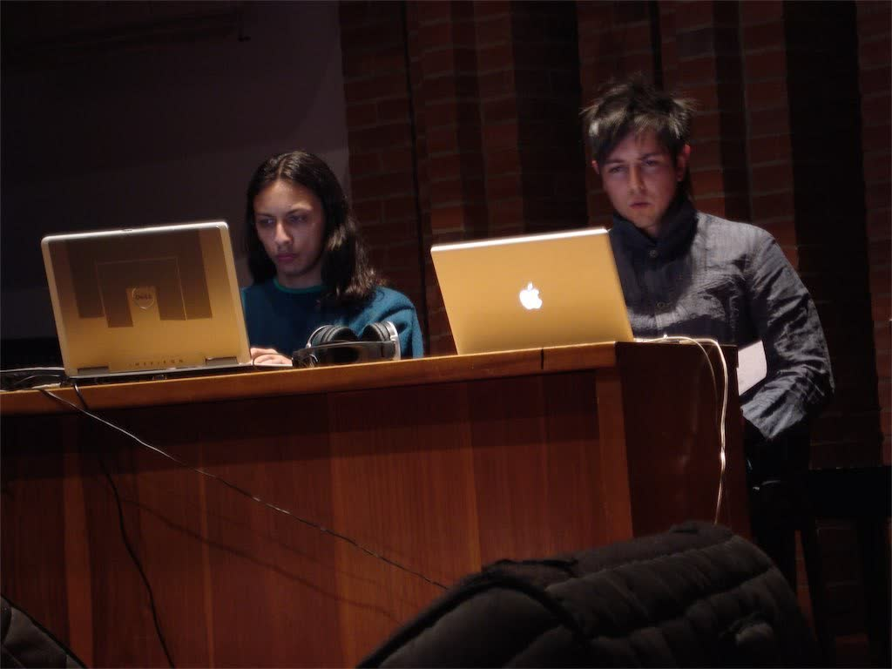
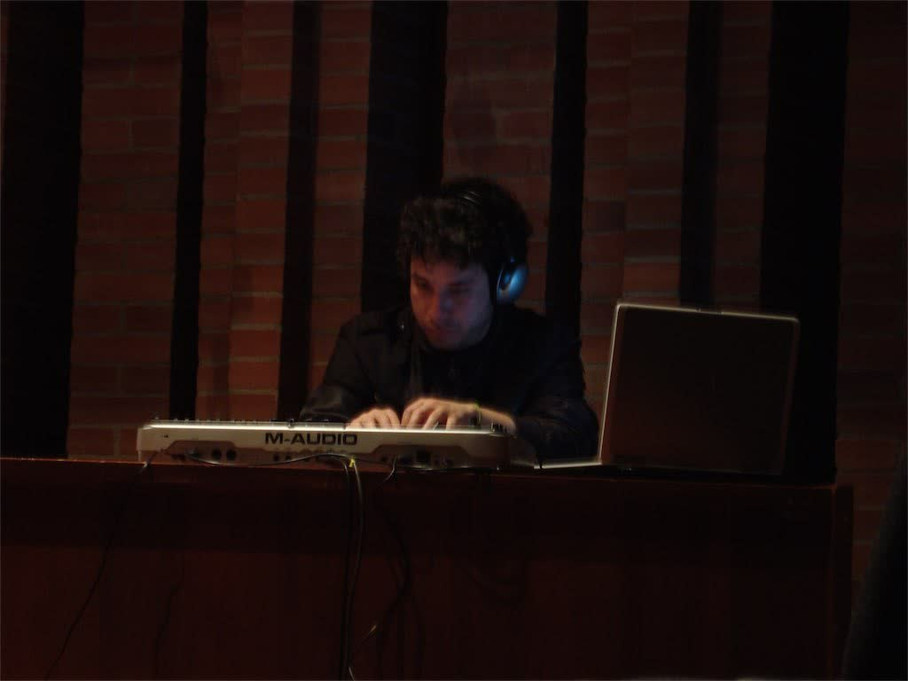